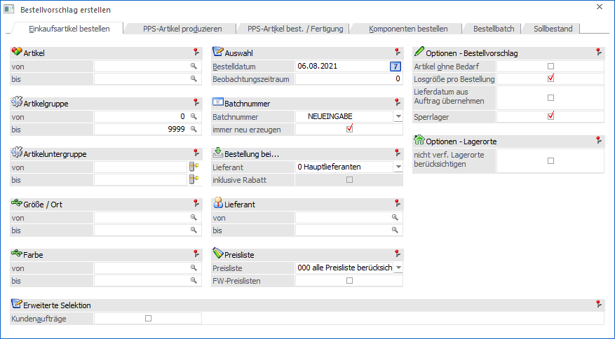
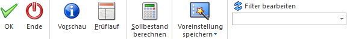
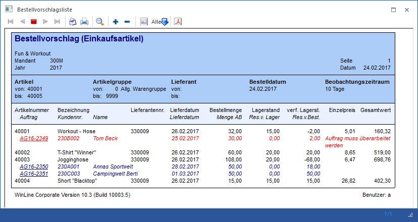

In dem Menüpunkt…
1 WinLine FAKT
1 Einkauf
1 Bestellvorschlag
1 Bestellvorschlag erstellen
… werden alle Lagerbestände (inklusive offener Aufträge und Bestellungen) kontrolliert und bei Unterschreitung des im Artikelstamm eingetragenen Lagermindestbestands (Register "Lager" - Unterregister "Einstellungen" - Feld "Lager Mind.") ein Bestellvorschlag erstellt.
Achtung
Ein Bestellvorschlag kann für einen Artikel nur dann ausgelöst werden, wenn im Artikelstamm zumindest 1 Lieferanten-Preislisteneintrag mit folgenden Daten vorhanden ist:
ü Preislisteneintrag mit Status "A"
ü Preislisteneintrag mit Menge ab "0"
ü Preislisteneintrag ist gültig bezogen auf das "Bestelldatum"
Hinweis 1
Artikel des Typs "1 - Lagerneutraler Artikel" werden im Bestellvorschlag nicht berücksichtigt.
Hinweis 2
Welche Artikel im Fall von Ausprägungsartikel in den Bestellvorschlag übernommen werden sollen, kann in dem Programm Ausprägungsoptionen - Einkauf definiert werden.

Da der Bestellvorschlag für unterschiedliche Arten von Artikeln durchgeführt werden kann, ist dieser in 6 Register unterteilt, welche in den nachfolgenden Kapiteln beschrieben werden:
ü Register "Einkaufsartikel
bestellen"
In diesem Register können "normale" Ein-/Verkaufsartikel bei
Lieferanten bestellt werden.
ü Register "PPS-Artikel
produzieren"
In diesem Register können Produktionsaufträge für
Produktionsartikel in der WinLine PPS generiert werden.
ü Register "PPS-Artikel best. /
Fertigung"
In diesem Register können Produktionsartikel bei Lieferanten
bestellt und eigene Fertigungen in Auftrag gegeben werden.
ü Register "Komponenten bestellen"
In
diesem Register können Artikel bei Lieferanten bestellt werden, welche für die
Herstellung von Produktionsaufträgen oder Handelsstücklisten benötigt
werden.
ü Register "Bestellbatch"
In diesem
Register werden bestehende Batches mit Nummer, Benutzer und Datum angezeigt.
Zusätzlich können weitere Batches erstellt bzw. bei den bestehenden Batches eine
Bezeichnung vergeben werden.
ü Register "Sollbestand"
In diesem
Register kann eine neue Sollbestandsmenge für ein bestimmtes Datum berechnet und
manuell bearbeitet werden.
Buttons

Ø Ok
Durch Anwahl des Buttons "Ok" wird ein Bestellvorschlag erstellt und an das Programm "Bestellvorschlag bearbeiten" übergeben, welches sich automatisch öffnet. Zusätzlich wird für Reservierungsartikel, welche bestellt aber nicht rechtzeitig (gemäß Auftrag) geliefert werden können, eine Sperrliste ausgegeben.
Im "Bestellvorschlag bearbeiten" werden anschließend alle zu bestellenden Artikel mit Menge und Lieferant aufgelistet, wobei jede Zeile editiert werden kann. Der endgültige Druck der Bestellung findet im Programm "Lieferantenbelege erstellen" statt.
Hinweis 1
Durch die Erstellung des Bestellvorschlags wird pro Artikel eine Dispositionszeile des Typs "Einkauf (Disposition)" gebildet.
Hinweis 2
Jeder Bestellvorschlag wird unter einer eigenen Batchnummer gespeichert. Mit Hilfe dieser Nummer können im weiteren Verlauf u.a. zielgerichtet Bestellungen ausgelöst (Programm "Lieferantenbelege erstellen") oder Bestellvorschläge gelöscht werden (Programm "Bestellvorschlag initialisieren").
Ø Ende
Durch Anwählen des Buttons "Ende" bzw. der Taste ESC wird der Menüpunkt geschlossen und kein Bestellvorschlag erstellt.
Ø Vorschau (nicht bei "Bestellbatch" und "Sollstand")
Mit Hilfe des Buttons "Vorschau" werden am Bildschirm alle Artikel angezeigt, welche zu der entsprechenden Selektion gefunden werden (abhängig von der Art des Bestellvorschlages).
Hinweis
Wenn Artikel mit Reservierungskennzeichen bestellt werden (siehe Einstellungen in den Fakt-Parametern und im Artikelstamm), so werden in der Vorschlagsliste alle reservierten Kundenaufträge des Artikels angezeigt. Zeilen in "blau" werden gemäß Wiederbeschaffungstagen rechtzeitig geliefert, Zeilen in "rot" hingegen nicht. Zusätzlich wird bei diesen Problemzeilen geprüft, ob eine Teillieferung möglich ist (wenn eine teilweise Reservierung vom Lager vorgenommen werden kann) oder ob der Auftrag nicht erfüllt werden kann und somit überarbeitet werden muss,

Ø Prüflauf (nicht bei "PPS-Artikel produzieren", "Bestellbatch" und "Sollstand")
Mit dem Button "Prüflauf" besteht die Möglichkeit einen Prüflauf zu starten und am Bildschirm auszugeben. Dieser Prüflauf listet alle Artikel auf, bei denen zwar ein Bedarf (zu geringer Lagerstand, Kundenbestellungen vorhanden, etc.) vorhanden ist, die Bestellung aber aufgrund fehlender Stammdaten nicht erzeugt werden kann.
Achtung
Ein Bestellvorschlag kann für einen Artikel nur dann ausgelöst werden, wenn im Artikelstamm zumindest 1 Lieferanten-Preislisteneintrag mit folgenden Daten vorhanden ist:
ü Preislisteneintrag mit Status "A"
ü Preislisteneintrag mit Menge ab "0"
ü Preislisteneintrag ist gültig bezogen auf das "Bestelldatum"
Ø Sollbestand berechnen (nicht bei "Bestellbatch")
Bei Anwahl dieses Buttons wird für alle Artikel (abhängig vom gewählten Register), die bei dem Sollbestandskennzeichen im Artikelstamm einen Wert ungleich 0 hinterlegt haben (Register "Lager" - Unterregister "Einstellungen" - Feld "Sollbestand"), der Sollbestand für das Bestelldatum berechnet (bzw. Bestelldatum + Beobachtungszeitraum, wenn hinterlegt) und in das Feld "Lager Soll" in den Artikelstamm zurückgeschrieben. Über die Veränderungen wird ein Protokoll in den Spooler bzw. auf den Drucker ausgegeben.
Achtung
Neben dem Sollbestandskennzeichen des Artikels ist der Typ relevant, da die Berechnung in Abhängigkeit vom gewählten Register erfolgt:
ü
ü Einkaufsartikel bestellen => Artikeltyp "0 - Hauptartikel"
ü PPS-Artikel produzieren => Artikeltyp "2 - Produktionsartikel"
ü PPS-Artikel best. / Fertigung => Artikeltyp "2 - Produktionsartikel" und "3 - Handelsstückliste"
ü Komponenten bestellen => Artikeltyp "0 - Hauptartikel"
ü Sollbestand => Artikeltyp "0 - Hauptartikel"
Hinweis
Bei den Einstellungen 1 bis 12 (Durchschnitt…) werden die durchschnittlichen Verkäufe der letzten x Monate (lt. Verkaufsstatistik) berücksichtigt.
Bei der Hinterlegung "99 - manuelle Eingabe" wird der Sollbestand des aktuellen Tages berechnet. Falls in diesem Fall datumsmäßige Überschneidungen hinterlegt wurden, so wird wie bei der Sollbestandsermittlung das "jüngste" Datum berücksichtigt.
Wenn keine Werte gefunden werden, also z.B. keine Statistikzeilen vorhanden sind, wird das Feld "Lager Soll" mit dem entsprechenden Wert verändert (d.h. in diesem Fall auf 0).
Beispiel
Im Artikelstamm ist als Sollbestand die Einstellung "5 - Durchschnitt der letzten 5 Monate" hinterlegt.
Vom Artikel wurde lt. Verkaufsstatistik im letzten Monat 30 Stk. und im vorletzten Monat 500 Stk. verkauft.
Im Bestellvorschlag wird die Sollberechnung durchgeführt, wodurch in den Artikelstamm (Feld "Lager Soll") 106 Stk. Zurückgeschrieben. Die Berechnung lautet:
ü 530 (Gesamtverkaufsmenge der letzten 5 Monate) / 5 (Monate) = 106 (Durchschnitt)
Ø Voreinstellung speichern
Durch Anwahl dieses Buttons erfolgt eine benutzerspezifische Speicherung aller im Fenster getätigten Einstellungen. Diese sogenannten "Voreinstellungen" können jederzeit wieder abgerufen werden und ermöglichen dadurch ein schnelleres und zielorientierteres Arbeiten (nähere Informationen entnehmen Sie bitte dem Kapitel "Die Voreinstellungen").
Ø Filter bearbeiten
Durch Anklicken des Buttons "Filter bearbeiten" kann der Bestellvorschlag nach frei definierbaren Kriterien eingeschränkt werden.